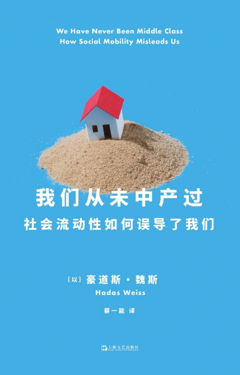
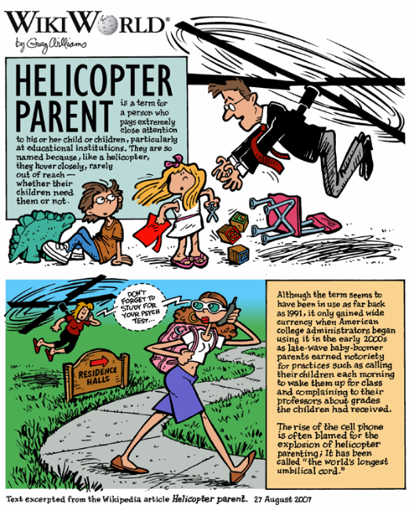

（图/《革命之路》）
在《我们从未中产过》一书中，以色列人类学家豪道斯·魏斯通过对德国、以色列和美国等国的民族志调研，试图剥掉“中产”的外衣，探讨这个观念如何在身份认同和私人生活中对普通人造成深远影响。
在她看来，“中产”概念所引出的是一条逐级展开的光谱，人们在光谱的首尾之间来回移动。中产的“居中”，暗示了空间的存在：在社会和经济的意义上，我们相对于地位更低或更高的人群而移动，时而离这群人更近一寸，时而又向另一群人更近一分。
当我们谈论“中产”时，除了“中产返贫三件套：房贷近千万，配偶不上班，二孩上国际”“中产户外三宝：拉夫劳伦、始祖鸟和lululemom”等“N件套”，网络上还出现了“中产最全品牌图鉴”，盘点其衣食住行中出现频率最高的品牌。
每个人心目中似乎都有一套中产标准，但又不知道该如何精准界定。看上去像“中产”的人，往往会否认自己是“中产”。“中产”，好像是用来谈论某种情绪的代名词，或者是某种营销手段——有一个说法，如果要评选令人不适的营销热词，“中产”一定榜上有名，而“新中产”更令人不适。
世界各国有不少论述中产阶层的著作。中国读者最熟悉的，可能是美国学者保罗·福塞尔的《格调——社会等级与生活品味》。福塞尔从衣食住行各个层面，描述美国社会各阶层的特征。其中，人数最多、所经受的嘲讽也最多的就是中产阶层。他们对等级流动最敏感、最做作、最为虚荣和势利，也最缺乏安全感、最循规蹈矩。
有媒体称，培养一个奥运网球冠军需要至少2000万元。（图/公众号@ELLEMAN睿士）
而在《我们从未中产过》一书中，以色列人类学家豪道斯·魏斯通过对德国、以色列和美国等国的民族志调研，试图剥掉“中产”的外衣，探讨这个观念如何在身份认同和私人生活中对普通人造成深远影响。
在她看来，“中产”概念所引出的是一条逐级展开的光谱，人们在光谱的首尾之间来回移动。中产的“居中”，暗示了空间的存在：在社会和经济的意义上，我们相对于地位更低或更高的人群而移动，时而离这群人更近一寸，时而又向另一群人更近一分。它更像是一个关于社会流动性的误导，“不管中产阶级性创造了何种关于‘自力更生’的乐观说法，我们都不是——也从来不曾是——中产阶级”。
究竟何为“中产”？它是美好愿景，还是永远没法实现的泡影？我们通过邮件采访了豪道斯·魏斯，与她聊了聊关于中产的迷思。

《我们从未中产过》
［以］豪道斯·魏斯 著，蔡一能 译
上海文艺出版社·艺文志eons，2024-1
“中产”更像一种修辞手法
新周刊 ：书中谈到，启发你写这本书的谜团之一，是“中产阶层”这个范畴代表了过于广泛的人口。为什么会有这种感触？
豪道斯·魏斯 ：“中产阶层”这个类别非常奇怪。一方面，它无处不在，报纸会谈论它，政客会关注它，经济学家会衡量它；但另一方面，没有人能确切地指出它到底指的是谁。所有试图通过职业、收入区间或可支配收入来定义它的方法，都遭到了质疑和驳斥。
总而言之，这些定义似乎都无关紧要。它似乎纯粹是一种修辞手法：建立并保持人们的想象力。发展中国家可能会以中产的扩张为豪，而发达国家可能会警惕它的萎缩。
作为一个人类学家，我曾针对以色列、德国和西班牙的人们如何看待抵押贷款、养老金、就业和教育等制度进行过民族志研究。在这些研究中，我注意到一个有趣的现象：每当我询问受访者的归属，他们都会说自己属于中产阶层。然而，他们当中既有富人，也有穷人，职业和就业情况跨度很大，生活方式的差异也很大。
他们似乎没有太多共同点，我怀疑他们是否会认为彼此属于同一个群体。尽管如此，这仍然是他们看待自己的方式。其他国家的研究也印证了我的观察：自视为中产阶层的人数远远多于任何官方定义所能涵盖的范围。
凯特·温斯莱特在《革命之路》中饰演一个中产家庭的主妇。（图/《革命之路》）
新周刊 ：过往研究中产群体的论著中，像保罗·福塞尔的《格调——等级与生活品味》，遭受嘲讽最多的就是中产阶层。你怎么看待这一自诩“中产”的群体的特征？
豪道斯·魏斯 ：我认为，仅限于文化层面的中产阶层研究过于狭隘，因为某个特定时空的中产阶层特质，并不一定适用于其他地方的中产阶层。然而，这类研究触及了中产阶层的一个普遍层面，即社会流动性。它强调，只要做出正确的投资，任何人都有可能跻身中产阶层；反之，如果不努力，则可能跌出这一阶层。社会流动性在文化或主观层面的体现是双重的，既有渴望，也伴随着忧虑。
成为中产，似乎意味着不属于任何阶级，而是一个自立的个体，命运通过自己的努力和才能来决定。这是一种让人感觉无比自由的想法，但同时也伴随着压力。因为，无论你做出怎样的投资，其他人也在做。你的成就价值总是相对的，取决于与他人的比较。不可避免地，你将不断与同侪进行竞争。一方面，这促使人们为了自己和家人而不断努力向上；另一方面，人们害怕犯下代价高昂的错误。
盖茨比相信自己通过奋斗，终将获得财富和成功。（图/《了不起的盖茨比》）
最有可能将自己定义为“中产”的，正是那些有能力在教育、专业资质或房产方面进行有意义投资的人。这里所说的“有意义投资”，指他们相信这些投资会让自己的财富增值，哪怕需要进行长线操作。
一些“麻雀变凤凰”式的成功故事，往往足以点燃这种想象力。这就可以解释，为什么许多出身贫寒的人也倾向于认为自己是中产：他们可能拥有的不多，但他们积极进取，为的是改善自己和家人（尤其是孩子）的生活。
而在社会阶层的另一端，即使是那些生于富裕之家的富人，也倾向于认为自己是中产。对他们来说，这是一种宣称他们拥有的财富源于自身技能和努力的方式。
黛西是个富家小姐。（图/《了不起的盖茨比》）
全世界都在“卷”
新周刊 ：你在书中提及“新中产阶层”这一群体及概念，并以中国商品房地产的崛起和小区所呈现的阶层分化为例。你认为新中产的“新”具体体现在什么地方？这一群体与中产的区别又在哪？
豪道斯·魏斯 ：属于中产阶层核心的“流动性”概念，植根于对财产和教育的投资，反之，这又取决于财产和教育的商品化以及市场竞争。在后社会主义国家、资源正在由国有转为私有的国家，以及最近经历过金融化的社会（高等教育、职业培训和房地产现在可以通过信贷和分期付款方式广泛获得，储蓄、保险和养老金则面临全球金融市场的风险）中，这种情况在不同程度上都是新鲜事物。
这使得中产阶层的队伍迅速壮大，许多新人加入其中，因此被称为“新中产”。但是，由于资产和专业资质的价值比以往任何时候都更不稳定，这意味着，那些认为自己属于中产阶层的人，在维持和复制他们的优势方面也缺乏安全感。
《三十而已》中的顾佳（童瑶饰演），一心想打入阔太圈子。（图/《三十而已》）
新周刊 ：如今，在中国，中产的“鸡娃”“内卷”现象被频繁讨论。以色列家庭也被卷入人力资本积累的竞争当中吗？与以往相比，以色列的教育观念有什么不同？
豪道斯·魏斯 ：全世界的家庭都被卷入其中！这就是为什么，家庭被认为是中产阶层的摇篮。孩子是父母们进行投资的最强动力。为人父母者担心，如果不进行投资，他们的孩子就会处于劣势。他们投入大量的时间、金钱和精力，为孩子创造一个培养技能和人脉的良好环境，并确保孩子接受良好的教育。然而，对孩子的投资是长期的，回报却遥遥无期。正因如此，它们也是所有投资中最不确定的。
在瞬息万变的就业市场中，一些技能贬值，新的技能则不断涌现，谁知道十年或二十年后，对孩子的投资会结出什么样的果实呢？父母花光了他们大部分的资源（甚至不惜借贷），为孩子提供良好的教育，这使得这些孩子的选择和命运背负着沉重的压力。
子女长大成人后，可能会证明父母所做的一切牺牲都是值得的，但也可能让这些牺牲变得毫无意义。当然，这或许还不足以让当今的家庭感到压力，那么，持续不断的投资需求以及无法预知哪些投资会获得回报的现实，还催生了所谓的“直升机父母”。他们对孩子的责任感，使他们无法放手，给予孩子空间和自由。

“直升机父母”示意图。（图/Wikimedia Commons）
与以往相比，公共保障越少，进行正确财富投资的风险就越高。教育就属于这类高风险投资。理想情况下，它能带来薪酬丰厚的工作。但是，（要考的）资格证越来越多，未来哪些资格证能用上，存在巨大不确定性。职业和进入这些职业的资质证明正在不断更新，它们被细分得更加垂直，在各个垂直领域，由更低成本的人力来完成工作。另一个压力来源是，教育没有终极的“优秀”标准，或者终点：无论你某方面做得多么出色，总有人会比你更好。
如果不持续在各种技能和资质证明上进行多元化投资，你就面临落后的风险。因此，在物质和非物质（精神和情感）层面上，教育都成为中产阶层投资的典型场所。正因如此，它也变成了自我认同和自尊的中心。
争夺相对地位的竞争
新周刊 ：“中产的衰落和黄昏”的说法屡见不鲜。如何看待这一群体的焦虑情绪？
豪道斯·魏斯 ：中产阶层的不安感，因投资价值和成功的不确定性以及随之而来的跌落风险而加剧。由于中产阶层崇尚精英主义和自主决定，人们普遍认为，任何不幸都是个人失败——没有足够地投资，或者投资错了东西——这会损害一个人的名誉和自尊心。反思变得更加复杂。事实上，存在一定程度的社会流动性。更大规模或更早期的投资，通常比小规模或后期的投资回报更高，也比没有投资要好——尽管并非总是如此。
当我们看到人们争夺稀缺资源时，我们担心，如果不加入竞争，就会处于劣势。人们拥有许多方法来阻止他人轻易获得某些东西，这样他们握在手里的东西才显得奇货可居。每个人不是压价就是被压价，不是收租就是被收租。因此，我们不断投资，以免落后。当我们获得的房子、养老金或资质证书等达不到预期目标时，我们会安慰自己：那也比没有这些东西的人有保障。
印度电影《起跑线》中，拉吉夫妇带女儿参观择校指导中心。（图/《起跑线》）
我们想象，如果有什么可怕的事情发生，其他人会首先倒下，他们倒下的身体会作为缓冲，减弱我们的崩溃感。众所周知，赌博上瘾的起因是小赢一把的快感驱使你玩下去，即使你知道，赢的永远是庄家。投资的结果绝非偶然，因此其影响更为深远。
无论投资的起点和终点如何，只要我们为了进步而做出牺牲，那么这种牺牲就成了解释的理由，说明我们为什么要比其他投资在同样事物上的人过得更好。
如果争先恐后地想在房价上涨之前“上岸”，或者努力获得一份能让我们在就业市场占上风的资质证书，我们宁愿警惕地盯着竞争对手，也不愿纠结于投资的实际价值。
这就是我在这本书的副标题中提到的“社会流动性如何误导我们”。社会流动性就像是资本主义版本的“分而治之”的古老策略：它让我们加倍努力以获得相对优势，而这些努力产生的盈余则在其他地方积累，超出了我们的能力范围。我们沉浸在争夺相对地位的竞争中，即使是最内向的人，也看不到支配和剥削我们所有人的结构。